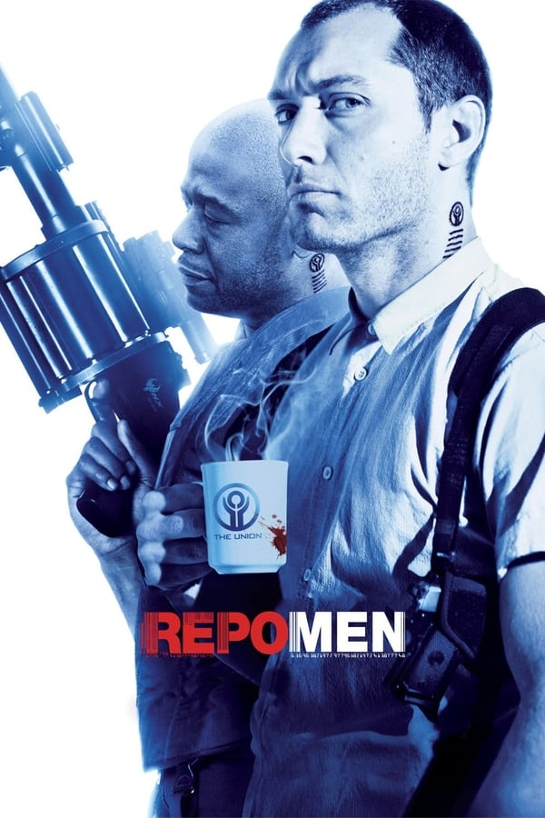

For a price, any organ in your body can be replaced. But it can also be repossessed.
In the future, medical technology has advanced to the point where people can buy artificial organs to extend their lives. But if they default on payments, an organization known as the Union sends agents to repossess the organs. Remy is one of the best agents in the business, but when he becomes the recipient of an artificial heart, he finds himself in the same dire straits as his many victims.
| Budget | $32,000,000.00 |
|---|---|
| Revenue | $18,409,891.00 |